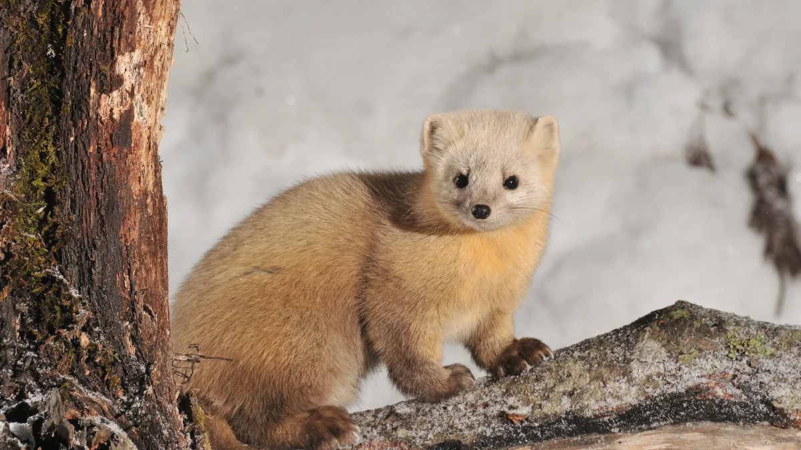
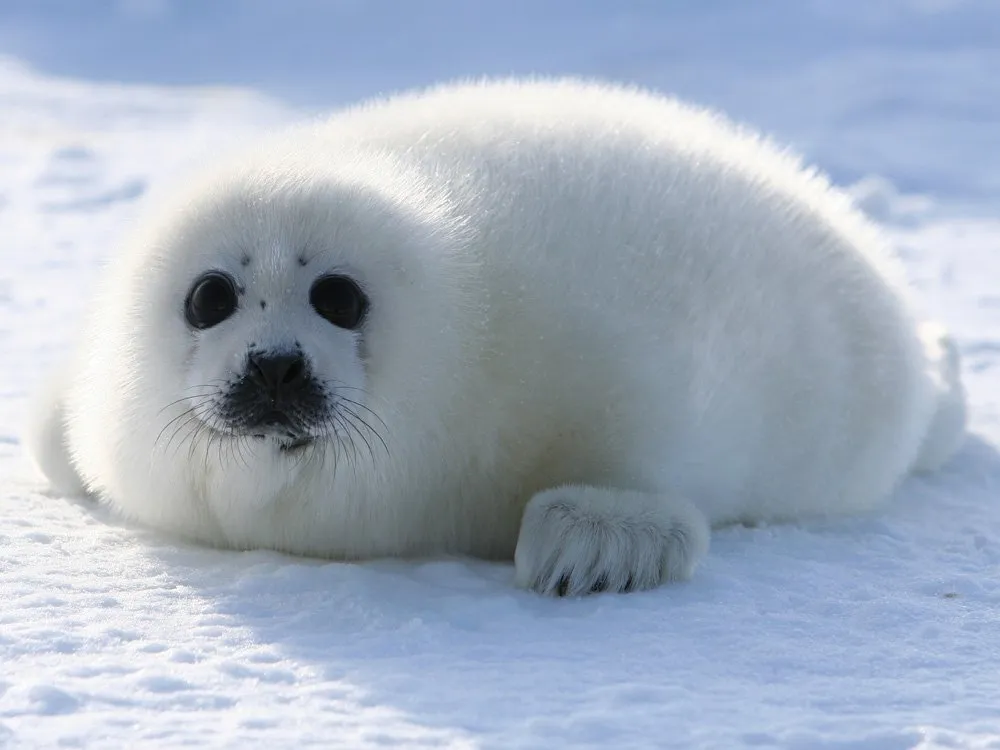
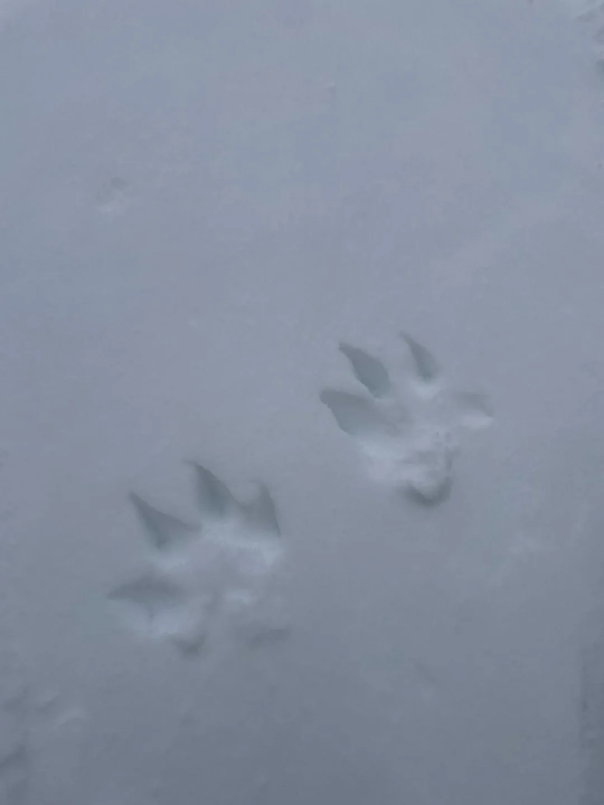
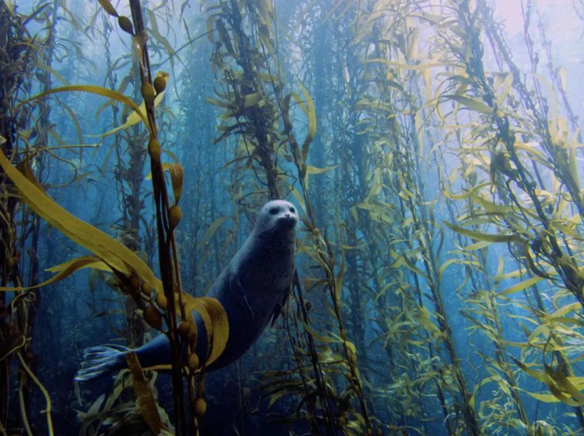
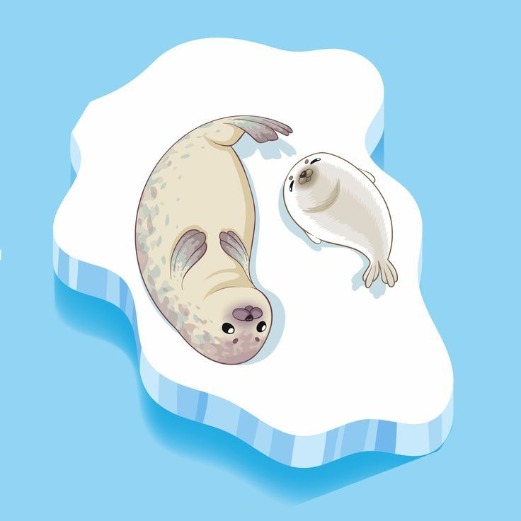
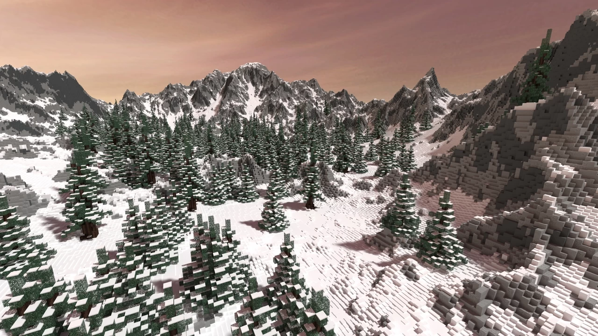
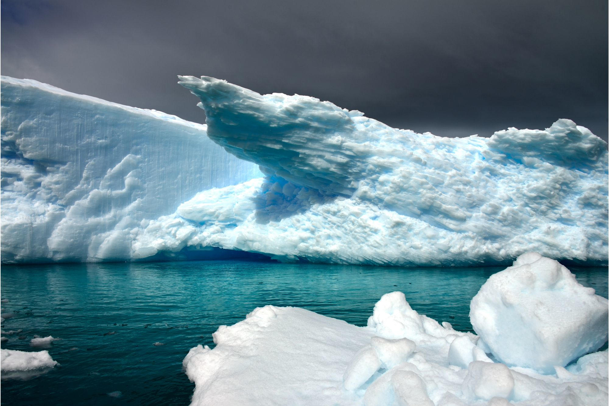
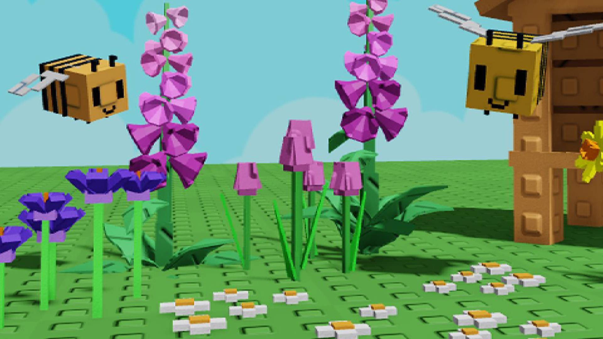

Sables
Forest-dwelling carnivores known for their dense, silky fur and crepuscular habits.
 Seals n Sables
Seals n Sables


Forest-dwelling carnivores known for their dense, silky fur and crepuscular habits.

Marine mammals adapted for life at sea, hauling out on coasts or ice to rest and raise pups.

Dense conifer and mixed woodlands provide cover, food, and den sites for sable populations.

Rocky coasts, kelp forests, and seasonal sea ice are critical for many seal species.
Sables are often loved for their unique charm, with their soft, glossy fur and graceful movements making them stand out among forest animals. Many people enjoy drawings of them, and sometimes those drawings become little keepsakes—reminders of why the sable is so special in the first place.

Dense, silky fur helps with insulation in cold climates.

Narrow paw prints with a bounding pattern in snow.

Will supplement with berries and fruit when available.
Seals are marine mammals adapted for life at sea, with streamlined bodies and flippers. They haul out on shorelines or ice to rest, molt, and raise pups.

Streamlined bodies reduce drag for efficient swimming.

Ice or beaches are vital nurseries for pups to develop.

Some species depend on seasonal sea ice for survival.
Status varies by species and region. Some populations are stable while others face pressures such as habitat loss, bycatch, and climate change.

Maintaining intact habitat supports sable populations.

Marine protected areas reduce disturbance to seals.

Local cleanup and awareness programs help reduce impacts.
Want to help out animals in need? Visit our donation page!